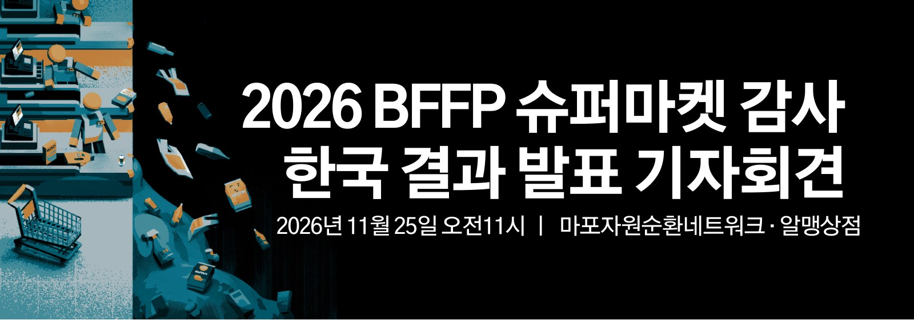
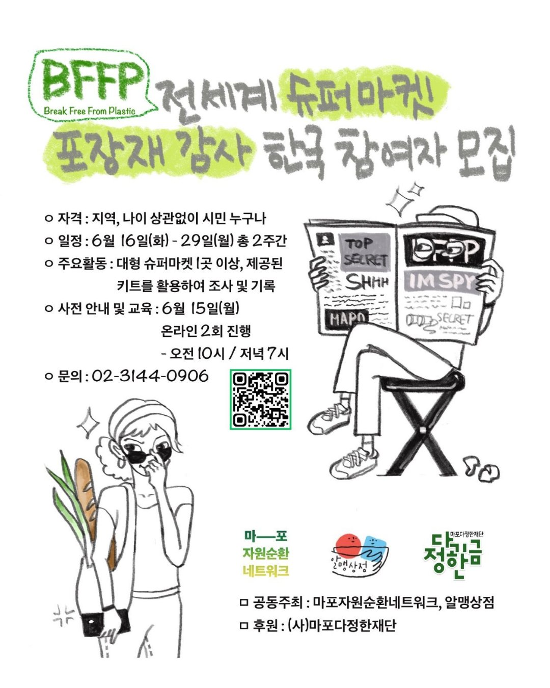
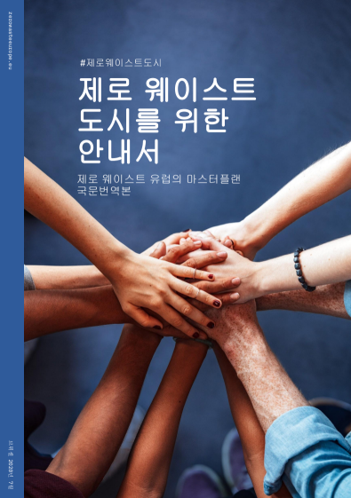

‘2026 BFFP 슈퍼마켓 감사’ 한국 결과 발표 기자회견
스티로폼 92%, 리필 코너 0곳 — 5대 대형마트에 포장 감축을 요구합니다. 11월 25일(수) 오전 11시, 이마트 본사 앞에서 엽니다.
자세히 보기‘이런 캠페인은 어떨까?’ ‘이런 정책이 필요한데!’
마포 곳곳에서 자원순환 도시를 만들기 위해
애쓰는 단체·기업·개인이 연서명으로 모였습니다.
혼자서는 고민으로 남던 생각을,
함께 머리를 맞대고 실현해 갑니다.

스티로폼 92%, 리필 코너 0곳 — 5대 대형마트에 포장 감축을 요구합니다. 11월 25일(수) 오전 11시, 이마트 본사 앞에서 엽니다.
자세히 보기
6월 16일부터 29일까지 2주간 시민 감사단이 전국 대형 슈퍼마켓의 포장재와 재사용 기반시설을 직접 조사했습니다. 한국이 처음 참여한 #BFFP 글로벌 슈퍼마켓 감사입니다.
자세히 보기마포구가 발주한 2026년 제로웨이스트 공동주택 모델 만들기 사업을 마포자원순환네트워크 이름으로 진행했습니다.

국제 환경 네트워크 가이아(GAIA)의 유럽 지부 역할을 하는 제로 웨이스트 유럽(Zero Waste Europe)이 유럽 도시들의 제로웨이스트 전환 경험을 담아 펴낸 마스터플랜입니다. 마포자원순환네트워크와 서울환경연합이 함께 번역해, 누구나 무료로 내려받을 수 있도록 공개했습니다.
우리가 조금씩 힘을 합치면, 고민으로만 가져왔던 일을 실현할 길을 만들 수 있습니다. 함께 공부하고, 정책과 조례를 제안하고, 마포 곳곳에서 공간과 프로그램을 함께 꾸려 갑니다.
소각 중심 행정에서 감량 중심 정책으로 전환합니다.
자치구 연대로 서울자원순환네트워크를 구축합니다.
시민의 실천을 모아 정책에 반영합니다.
지속가능한 서울의 미래를 위한 제로웨이스트 도시를 선언합니다.
마포구가 발주한 2026년 사업입니다. 공동주택 단지와 함께 쓰레기를 줄이는 관리 모델을 만들었고, 마포자원순환네트워크 이름으로 계약해 진행했습니다.
활동 보기#BFFP와 함께 전국 10개 시·도 53개 매장의 포장 실태를 시민이 직접 조사했습니다. 결과는 2026년 11월 25일 기자회견으로 발표합니다.
활동 보기제로 웨이스트 유럽(Zero Waste Europe)이 펴낸 「The Zero Waste Masterplan」을 서울환경연합과 함께 번역했습니다. 유럽 도시들의 제로웨이스트 전환 경험을 담은 안내서를 누구나 내려받을 수 있습니다.
자세히 보기발족 포럼(2025.6.30), 서울환경연합과 함께한 종량제 30주년 포럼 시리즈, 국회 토론회(2026.1.30) 등 정책을 바꾸는 공론장을 엽니다.
활동 보기마포자원순환네트워크는 하나의 조직이 아니라, 뜻에 동의해 연서명한 단체·기업·개인의 느슨한 연대입니다.